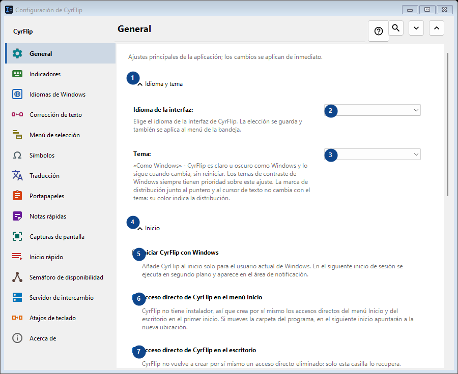
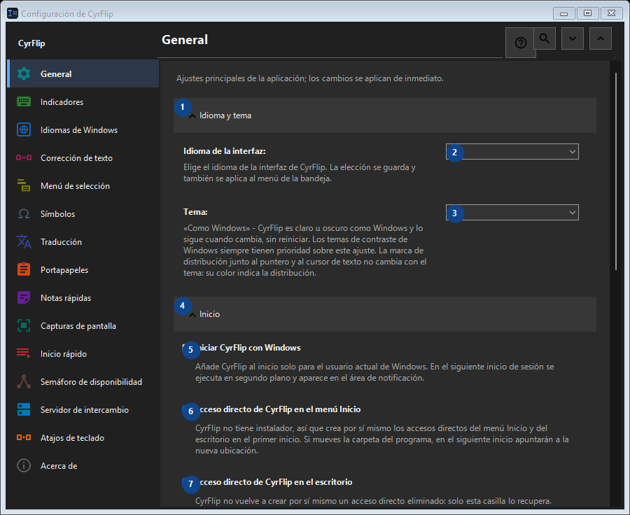

General
Para qué sirve
Ajustes principales de la aplicación; los cambios se aplican de inmediato.


Orden de uso
Los ajustes se aplican de inmediato. No hay un orden obligatorio; usa los grupos siguientes.
Elementos
1. Idioma y tema
Usa este comando para la acción indicada. Lee cualquier confirmación antes de aceptarla.
Tus atajos2. Idioma de la interfaz
Elige o introduce el valor de la etiqueta contigua. Revísalo antes de continuar.
Tus atajos3. Tema
Elige o introduce el valor de la etiqueta contigua. Revísalo antes de continuar.
Tus atajos4. Inicio
Usa este comando para la acción indicada. Lee cualquier confirmación antes de aceptarla.
Tus atajos5. Iniciar CyrFlip con Windows
Añade CyrFlip al inicio solo para el usuario actual de Windows. En el siguiente inicio de sesión se ejecuta en segundo plano y aparece en el área de notificación.
Tus atajos6. Acceso directo de CyrFlip en el menú Inicio
CyrFlip no tiene instalador, así que crea por sí mismo los accesos directos del menú Inicio y del escritorio en el primer inicio. Si mueves la carpeta del programa, en el siguiente inicio apuntarán a la nueva ubicación.
Tus atajos7. Acceso directo de CyrFlip en el escritorio
CyrFlip no vuelve a crear por sí mismo un acceso directo eliminado: solo esta casilla lo recupera.
Tus atajos8. Energía y pantalla
Usa este comando para la acción indicada. Lee cualquier confirmación antes de aceptarla.
Tus atajos9. Evitar que el equipo se suspenda
Mientras está activo, Windows no se suspende ni hiberna por inactividad: útil para descargas, copias o renderizados largos. El estado se guarda: un interruptor que dejes activado mantiene el equipo despierto también tras reiniciar - CyrFlip no vigilará la batería por ti.
Tus atajos10. Mantener la pantalla encendida (como en un vídeo)
La pantalla no se apaga ni se bloquea por inactividad, igual que al ver un vídeo. No anula el bloqueo por contraseña (Win+L o una directiva de seguridad). El estado se guarda: un interruptor que dejes activado mantiene la pantalla encendida también tras reiniciar.
Tus atajos11. Transferir configuración
Usa este comando para la acción indicada. Lee cualquier confirmación antes de aceptarla.
Tus atajos12. Exportar configuración...
Usa este comando para la acción indicada. Lee cualquier confirmación antes de aceptarla.
Tus atajos13. Importar configuración...
Usa este comando para la acción indicada. Lee cualquier confirmación antes de aceptarla.
Tus atajos14. Restaurar configuración anterior...
Aún no hay nada que restaurar: CyrFlip guarda el estado original justo antes del primer cambio. Este elemento no está disponible. Activa primero la función o selecciona una entrada.
Tus atajos15. Mantener una copia de seguridad de la configuración en Documentos
Mientras esté activada, CyrFlip mantiene una copia de seguridad gradual de cada ajuste en Documents\CyrFlip\Backups - se conservan las tres más recientes. La copia sobrevive a una reinstalación desde Microsoft Store: una instalación nueva la encuentra y ofrece restaurarla. El archivo contiene sus equipos, sitios y escenarios - manténgalo privado.
Tus atajos16. Abrir la carpeta de copias de seguridad
Las copias de seguridad son archivos de configuración normales, nombrados por fecha. Abra la carpeta para copiar una o llevarla a otro equipo.
Tus atajos